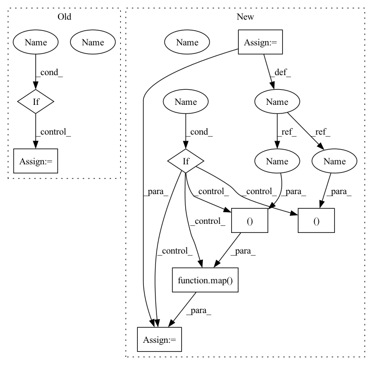

Pattern ID :701

Before Change
get_attn = lambda: SinkhornSelfAttention(dim, causal = causal, heads = heads, buckets = buckets, kv_buckets = kv_buckets, non_permutative = non_permutative, sinkhorn_iter = sinkhorn_iter, n_sortcut = n_sortcut, temperature = temperature, attn_dropout = attn_dropout, dropout = attn_layer_dropout, attn_sort_net = attn_sort_net)
get_ff = lambda: FeedForward(dim, dropout = ff_dropout, glu = ff_glu)
if weight_tie:
get_attn = cache_fn(get_attn)
get_ff = cache_fn(get_ff)
for _ in range(depth):
After Change
get_ff = lambda: FeedForward(dim, dropout = ff_dropout, glu = ff_glu)
get_attn_context = lambda: SinkhornSelfAttention(dim, context_only = True, heads = heads, buckets = buckets, kv_buckets = kv_buckets, non_permutative = non_permutative, sinkhorn_iter = sinkhorn_iter, n_sortcut = n_sortcut, temperature = temperature, attn_dropout = attn_dropout, dropout = attn_layer_dropout, attn_sort_net = attn_sort_net)
get_ff_context = lambda: FeedForward(dim, dropout = ff_dropout, glu = ff_glu)
if weight_tie:
get_attn, get_attn_context, get_ff, get_ff_context = map(cache_fn, (get_attn, get_attn_context, get_ff, get_ff_context))
for _ in range(depth):
layers.append(nn.ModuleList([
PreNorm(nn.LayerNorm, dim, get_attn()),
In pattern: SUPERPATTERN
Frequency: 3
Non-data size: 8
Instances
Fragment ID: 1658139
Project Name: lucidrains/sinkhorn-transformer
Commit Name: c2662a20cb783efd3351936cfabc83131060a2a6
Time: 2020-04-10
Author: lucidrains@gmail.com
File Name: sinkhorn_transformer/sinkhorn_transformer.py
Class Name: SinkhornTransformer
Method Name: __init__
Parent Class: nn.Module
Fragment ID: 1658141
Project Name: lucidrains/sinkhorn-transformer
Commit Name: c2662a20cb783efd3351936cfabc83131060a2a6
Time: 2020-04-10
Author: lucidrains@gmail.com
File Name: sinkhorn_transformer/sinkhorn_transformer.py
Class Name: SinkhornTransformer
Method Name: __init__
Parent Class: nn.Module
Fragment ID: 1658143
Project Name: lucidrains/perceiver-pytorch
Commit Name: 10a83b0c27f1bf9d0018a1d968a2fa397d8888c9
Time: 2021-03-22
Author: lucidrains@gmail.com
File Name: perceiver_pytorch/experimental.py
Class Name: Perceiver
Method Name: __init__
Parent Class: nn.Module
Fragment ID: 1658177
Project Name: lucidrains/reformer-pytorch
Commit Name: fbae34221f4e2c2d777551a5e92b8bba5ae2385c
Time: 2020-06-06
Author: lucidrains@gmail.com
File Name: reformer_pytorch/reformer_pytorch.py
Class Name: Reformer
Method Name: __init__
Parent Class: nn.Module